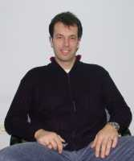

People of Žejane in Front of the World
Last fall a team from the Discovery Channel from London made a promo film in Žejane about the Istrio-Romanian language
Some sources claim that some six thousand languages are spoken today in the world. This linguistic diversity becomes each day more endangered. Every two weeks one of these languages or dialects disappears from the face of the Earth. The preservation of these endangered languages is the goal of the UNESCO world organization, and therefore they try to document the most endangered languages of the world by making short documentary films. These fils will be then presented on the prestigious Discovery Channel throughout the year. The material that is presented on this channel has an audienace of millions of viewers, which is very important especially when some of these global organizations are focused on preserving the heritage, in this case languages of small relatively unknown hidden places and their population. One such places is Žejane who's inhabitants, which is known to the inhabitants of these territories, are speaking a special language or dialect which they call simply "Žejanski," however, "officially" we are talking about Istro-Romanian language. This language was the reason that the Discovery Channel team came here through their Žejane connection – Igor Doričić, a member of the folklore society "Žejanski Žvoncary" (The Bell Ringers of Žejane) and the leaders of the singing group "Žejanski Cantaturi" (Žejane's Singers) with whom we talked about this "working visit".
The American Connection
What are we talking about and how did this cooperation started?
 The whole story started at the end of August last year with a call by Denis Sanković, who lives in the USA, but he is a native of Žejane and somebody who loves Istria and this territory, its people and their customs. He was contacted by Siobhan Lowrey, a producer at Discovery Channel Europe regarding the project they were working on. The word is about the UNESCO project dealing with preservation of dying languages in the Wwrld in which framework the Discovery Cannel team for several years now documents three such languages. This year among one hundred candidate languages the Žejane language entered the top three which will be documented and aired by the Discovery Channel this year.
The Žejane connection with the London team, in America is the "American Žejane man" Denis Sankovic and here?
The producer had simply entered the internet search engines looking for Žejane and discovering a few files from Denis which allowed them to get in touch. We had decided to form a six-member team of journalists, cameramen and reporters, which came to Žejane last September.
Besides "Discovery people" did the Žejane heritage became interesting to some other paper publishers?
Besides the Discovery team after two days came around seven-eight reporters and cameramen among them well noted journalistic teams from Romanian and Polish magazines. Being with them I found a very important fact that the kids in Romania are learning in school that "over there" in Central Europe exist people who speak Romanian, similarly to the Croatian people in Gradisce who also today speak Croatian language. It was interesting that this Romanian guest, even though the Žejane language is over 500 years old and had absorbed Chakavian, Italian and Croatian expressions, was able to almost completely understand our Mauro who spoke to him in the Žejane language.
Everything in two minutes
Is this the result of the four days of filming?
In the few days of filming it was filmed about four hours of total material, which also surprised the people of the Discovery Channel. There was surprisingly a lot of material to film, as they said, because beside documenting the language they also recorded and filmed the local singing group, bugarenje, cindra, therefore much more than what they intended, which will based on their enthusiasm hopefully leave room for a project on this theme. The result of their visit is very short it lasts only a bit more than two minutes and it is a promotional film which shows: Mauro Doričić, president of the folklore group "Žejanski Žvoncari" who speaks in the Žejane language about the folklore, customs and life in general of the people in Žejane and other nearby villages. Everything what followed by the beautifully dreased Žejanes, bell ringers … they even filmed the way people plowed their fields, tilling with plow which was pulled by horses. All together, as far as I could see, everything came out very well , very worldly. This short film has already been shown on the Discovery Channel program and that four, five, six and even seven and more times a day.
English translation: Pino Golja

Žejanci pred svjetskim auditorijem
Londonska ekipa Discovery Channela u Žejanama prošle jeseni snimila promo-film o istro-romanskom jeziku
Po nekim podacima u svijetu se danas govori oko šest tisuća jezika, no svjetska jezična raznolikost svakog je dana sve ugroženija, barem sudeći po podacima po kojima prosječno svaka dva tjedna s lica zemlje nestaje jedan jezik, narječje ili govor. Očuvanje ugroženih jezika jedan je od ciljeva svjetske organizacije UNESCO u sklopu kojeg se dokumentiraju najugroženiji jezici svijeta čiji je dio i projekat snimanja kratkih dokumentarnih filmova koji će se tijekom godine prikazivati na svjetski poznatom Discovery Channelu. Materijal koji se prikaže na njihovom programu svakodnevno dopire do milijunskog televizijskog auditorija, što svakako nije mala stvar, tim više, ako je interes dotičnih globalnih organizacija okrent prema baštini, u ovom slučaju jeziku, malih, relativno nepoznatih, samozatajnih mjesta i njihovih žitelja. Jedno od tih naselja su i Žejane čiji žitelji, što je vjerovatno poznato stanovnicima ovih krajeva, govore specifičnim jezikom, odnosno narječjem kojeg sami nazivaju jednostavno "žejanski," no zapravo se "službeno" govori o takozvanom istro-romanskom jeziku. Upravo taj jezik razlogom je dolaska ekipe Discoveryja čija je "žejanska" veza bio Igor Doričić, član folklornog društva "Žejanski zvončari" i voditelj pjevačke skupine "Žejanski kntaduri" s kojim smo popričali o ovoj "radnoj posjeti".
Američka veza
O čemu se zapravo radi i kako je uopće krenula suradnja?
Cijela priča zapravo je krenula krajem kolovoza prošle godine pozivom koji mi je uputio Denis Sanković, koji živi i radi u Sjedinjenim Američkim Državama, ali je porijeklom iz Žejana, a ujedno je i veliki zaljubljenik u Istru i ove krajeve, njihove ljude i običaje. Njega je, naime, kontaktirala Siobhan Lowrey, producentica Discovery Channela Europa, u svezi s projektom na kojemu rade. Radi se o UNESCO-vom projektu zaštite izumirućih jezika u svijetu u okviru kojeg Discoveryeva ekipa već nekoliko godina svake godine dokumentira tri takva jezika. Za ovu godinu u izboru od njih stotinjak, žejanski, ili kako ga oni nazivaju istro-romanski, istro-romanian, ušao je u uzak izbor od tri jezika koja će se zabilježiti i prikazati na programu Discovery Channela.
Žejanska veza je dakle ekipi iz Londona, u Americi bio "američki Žejanac" Denis Sanković, a ovdje?
Producentica je jednostavno u internetsku tražilicu ukucala pojam Žejane i otvorilo joj se nekoliko Denisovih fileova te ga je kontaktirala. Kako smo on i ja i inače u kontaktu, pao je dogovor i šestočlana ekipa novinara, snimatelja i reportera u rujnu prošle godine stigla je u Žejane.
Uz "discoveryjevce" žejanska baština zainteresirala je i neke druge novinske kuće?
Uz ekipu Discoverya nakon dva dana stiglo je još oko sedam, osam reportera i snimatelja od kojih i novinske ekipe iz najtiražnijih rumunjskih i poljskih časopisa. Iz druženja s njima saznao sam jedan zanimljiv podatak, a to je da u Rumunjskoj učenici u osnovnoj školi uče o tome kako i "tamo negdje" u Srednjoj Europi postoje ljudi koji govore rumunjski jezik, isto kao što i naša djeca uče kako postoje, primjerice, Gradišćanski Hrvati koji i danas njeguju hrvatski jezik. Zanimljivo je i to da je naš gost iz Rumunjske unatoč činjenici da je, po mojim saznanjima, žejanski jezik star preko 500 godina i uz to je poprimio čakavskih, talijanskih i hrvatskih izraza, gotovo u potpunosti razumio našeg Maura koji je s njim pričao na žejanskom.
Sve u dvije minute
Rezultat četverodnevnog snimanja?
U tih par dana koliko je snimanje trajalo, snimljeno je sveukupno oko četiri i pol sata materijala, što je zaista iznenadilo i same "discoverijevce". Naime, "materijala" za snimanje imali su, kako su i sami rekli, iznenađujuće puno tako da su osim jezika dokumentirali i naše pjevačko društvo, bugarenje, cindru, znači daleko više toga no što su namjeravali, što možda, s obzirom na oduševljenje i interes koji su pokazali, ostavlja prostora za nekakav projekt na tu temu. Rezultat njihova posjeta je kratak, traje nešto više od dvije minute, promo-film koji izgleda otprilike ovako: Mauro Doričić, predsjednik Folklornog društva "Žejanski zvončari" na žejanskom jeziku govori o folkloru, običajima i životu ljudi u Žejanama i okolnim selima. Sve je praćeno krasnim kadrovima Žejana, zvončara..., pa čak je snimljeno i kako su nekada ljudi orali, ručno, s plugom kojeg vuče konj. Sve skupa, koliko sam vidio, izgleda vrlo dobro, vrlo "svjetski". Ovaj kratak film već se vrtio na Discoveryjevom programu i to čak po šest, sedam i više puta na dan.
Alenka Jurčić
March 21, 2004
© 2004 Novi List